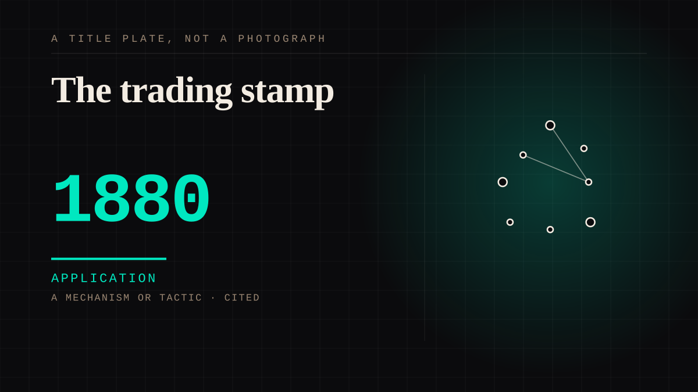

A mechanism or tactic · 1880–1891 · Retail
The trading stamp
A loyalty scheme by paper coupon, redeemable at any participating shop, popular decades before loyalty cards existed.

The first loyalty scheme, and it is already the whole modern mechanism: a discount in exchange for the customer choosing this shop repeatedly. The paper only changed.
Application. One-sided attachment put to work on purpose. Creator economies, community, fandom as infrastructure, and the things that genuinely help people. Not automatically good - a tool with an obvious use is a tool that will also get a bad one.
Manipulation. One-sided attachment engineered for somebody else's benefit. Paid intimacy, parasocial persuasion, sasaeng, grief extraction, the streak. The lane that pays the bills and the lane that causes the most harm, frequently at the same time.
Where it sits
1800 1800-1899 · 1880 1899
Provenance · 5 source record(s)
- unverifiedA peer-reviewed history of the mechanism in the United States, covering 1891-2008. The title's own span is what dates the entry: the documented run of trading stamps begins in 1891, not the decade earlier this entry previously claimed.Elnahla, N., & Neilson, L. C. Getting something for nothing: the history of trading stamps in the United States of America (1891-2008).
- retrievableSchuster's Department Store, Milwaukee issued the first stamps in 1890-91, specifically to push cash customers away from credit; L.H. Parke followed in 1895; S&H Green Stamps launched 1896, first customer a housewife in a Jackson, Michigan dry goods storeSomething for everyone? The rise and fall of trading stamps (2024), drawing on the Hartman Center archives, Duke University. ↗
- retrievableScale: in the 1950s-60s S&H printed three times as many stamps as the US Post Office, and its 1964 catalogue was the largest single publication in the United States. Andy Warhol painted the stampsTrading Stamps. Encyclopedia.com. ↗
- retrievableThe retailer case, with USDA field studies: sustained sales lift, and S&H claiming a 15-20% increase was needed to make stamps payJohnson, C. K. Trading stamps and the retailer. (USDA Marketing Division studies). ↗
- unverifiedThe trading economy persists in its modern form: fan forums are used for buying, selling and TRADING photocardsAscue et al., Annyeong, Saranghae (De La Salle University).
Connected · 3 out, 4 in
It sits in
The full timeline → · The database → · See it in the atlas →